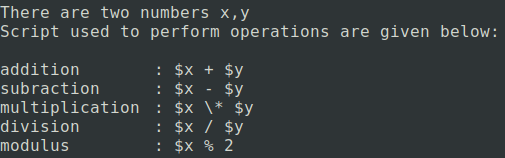
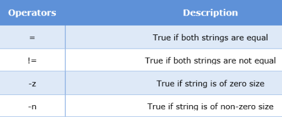
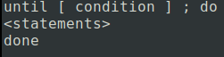

What is Shell Scripting?
What is a Shell ?
Shell is an environment in which we can run our commands, programs, and shell scripts. There are different flavors of a shell, just as there are different flavors of operating systems. Each flavor of shell has its own set of recognized commands and functions.
In Unix, there are two major types of shells −
Bourne shell
If you are using a Bourne-type shell, the $ character is the default prompt.
C shell
If you are using a C-type shell, the % character is the default prompt.
Bourne shell was the first shell to appear on Unix systems, thus it is referred to as "the shell".
Bourne shell is usually installed as /bin/sh on most versions of Unix. For this reason, it is the shell of choice for writing scripts that can be used on different versions of Unix.
To determine your shell :
echo $SHELL
What is Shell Script
The basic concept of a shell script is a list of commands, which are listed in the order of execution. A good shell script will have comments, preceded by # sign, describing the steps.
There are conditional tests, such as value A is greater than value B, loops allowing us to go through massive amounts of data, files to read and store data, and variables to read and store data, and the script may include functions.
All the scripts would have the .sh extension
Before you add anything else to your script, you need to alert the system that a shell script is being started. This is done using the shebang construct.
Example :
#!/bin/sh
This tells the system that the commands that follow are to be executed by the Bourne shell. It's called a shebang because the # symbol is called a hash, and the ! symbol is called a bang.
Execution of a Script
Shell Scripting Basics
echo command

Variables
Shell variables are identifiers that take a value at command prompt.
Shell variables can be accessed using a '$' in front of the variable name.
The name of a variable can contain only letters (upper or lower case), numbers (0 through 9) or the underscore character.
Quoted variables preserve white spaces where as non-quoted variables don’t. Non quoted variables will split the variable in parts at white spaces. An argument enclosed in double quotes presents itself as a single word.
Special Variables
A bash shell script have parameters. These parameters start from $1 to $9.
When we pass arguments into the command line interface, a positional parameter is assigned to these arguments through the shell.
The first argument is assigned as $1, second argument is assigned as $2 and so on...
If there are more than 9 arguments, then tenth or onwards arguments can't be assigned as $10 or $11.
You have to either process or save the $1 parameter, then with the help of shift command drop parameter 1 and move all other arguments down by one. It will make $10 as $9, $9 as $8 and so on.
Arrays
Arrays are the collection of elements. In shell scripting, data type declaration is not required with arrays. The values of the variables can be accessed using '$' as prefix to these elements.
Arrays provide a method to group a set of data.
Command Substitution
Shell variables can hold commands that gets substituted when they are interpreted.
Command substitution reassigns the output of a command or multiple commands and plugs the output into another context.
Command substitution assigns the substituted output to a variable if it is being assigned in a context. It invokes a new sub shell for the execution and passes it to the parent.
Input-Output
Shell scripting allows user to provide input either through command line or in an interactive way when probed. The command "read" is used to take the input from the user.
Syntax :
read [-p prompt] [-a array] [-d delim] [-ers] [-n nchars]
Operators
Arithmetic Operators


Relational Operators
String Operators

File Operators
Logical Operators
Decision Making
If-Else
Nested If else
Using case

Looping in Shell
for-loop
while-loop
untill-loop

The while looping construct executes the statements when the given condition evaluates to true. On the other hand, the "until" loop executes the statements as long as the condition evaluates to false.
Functions in Shell
With the help of functions, overall functionality of a function can be divided into smaller or logical parts, which can be called to perform their task. It helps us to check our program part by part. We can reuse the function where ever we want.
Call the function with their function name
Example :
Pass one or more parameters in a function. Parameters will be defined as $1, $2 and so on